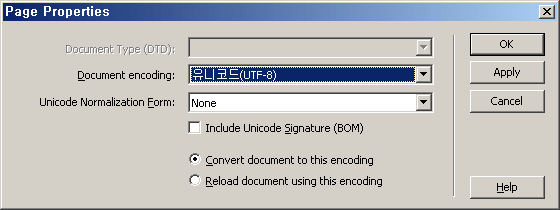

Naming 정의
CSS 파일 네이밍
css 파일을 여러개로 나누는 경우 http 요청이 늘어나서 웹페이지 전송속도에 좋지 않은 영향을 주게 되므로 파일의 수는 최소한으로 유지합니다. 사이트 루트 디렉토리에 /css/ 폴더를 생성하고 전역에 쓰이는 파일의 이름은 default.css 으로 지정합니다.
/css/default.css
모든 스타일을 포함하는 파일
/css/default_sub.css
서브페이지의 모든 스타일을 포함하는 파일
/css/introduction.css
각 페이지별로 유형이 존재하는 경우 별도로 분리 (파일명은 폴더명으로 대처한다. 폴더 가이드 바로가기
/css/popup.css
팝업등 새로운 페이지 유형이 존재하는 경우 별도로 분리
Image 네이밍 규약
아래 제시된 종류의 이미지 이름들은 각각의 목적에 맞는 형태로 사용될 수 있도록 예약되어 있습니다. 아래 표현들은 다른 목적으로 사용하거나 독창적인 형태로 변형하여 사용하지 않습니다. "*" 표시는 해당 이미지의 의미나 상태를 가장 잘 표현할 수 있는 단어로 치환하거나 또는 생략할 수 있습니다. 네이밍의 순서는 '대분류-중분류-소분류' 또는 '형태-의미-상태' 순입니다. 동일한 용도의 이미지가 여러개인 경우 마지막 단어에 숫자를 붙여서 다르게 네이밍 합니다.
| 분류 | 예약어 | 설명 | 권장표현 | ||
|---|---|---|---|---|---|
| 형태 | 형태+의미+상태 | ||||
| 제목 | h*_* | h_* | 불특정 레벨의 제목 | 제목 태그로 마크업되는 이미지 요소. | 전경 |
| h1_* | 제목 1 | ||||
| h2_* | 제목 2 | ||||
| h3_* | 제목 3 | ||||
| h4_* | 제목 4 | ||||
| h5_* | 제목 5 | ||||
| h6_* | 제목 6 | ||||
| 문장 | p_* | p_* | 문장 | 통상 p 요소로 마크업되는 이미지 형태의 텍스트. | 전경 |
| 네비게이션 | gnb_* | gnb_* | 글로벌 | 네비게이션 목적의 버튼 또는 탭. | 전경 |
| lnb_* | lnb_* | 로컬 | |||
| snb_* | snb_* | 사이드 | |||
| 탭 | tab_* | tab_* | 탭 | gnb, lnb, snb에 포함되지 않으며 탭으로 분류되는 버튼 또는 버튼의 배경. | 전경/배경 |
| 버튼 | btn_* | btn_list_* | 목록 | 모든 종류의 버튼. | 전경 |
| btn_read_* | 읽기 | ||||
| btn_write_* | 쓰기 | ||||
| btn_modify_* | 수정 | ||||
| btn_delete_* | 삭제 | ||||
| btn_reply_* | 답변 | ||||
| btn_cancel_* | 취소 | ||||
| btn_search_* | 검색 | ||||
| btn_find_* | 찾기 | ||||
| btn_registeration_* | 등록 | ||||
| btn_confirm_* | 확인 | ||||
| btn_submit_* | 전송 | ||||
| btn_upload_* | 업로드 | ||||
| btn_download_* | 다운로드 | ||||
| btn_install_* | 설치 | ||||
| btn_file_* | 파일 | ||||
| btn_stop_* | 정지 | ||||
| btn_play_* | 실행 | ||||
| btn_prev_* | 이전 | ||||
| btn_next_* | 다음 | ||||
| btn_up_* | 위로 | ||||
| btn_down_* | 아래로 | ||||
| btn_zip_* | 우편코드찾기 | ||||
| btn_go_* | 페이지 이동 | ||||
| btn_refresh_* | 새로고침 | ||||
| btn_open_* | 열기 | ||||
| btn_close_* | 닫기 | ||||
| btn_zoom_* | 확대 | ||||
| btn_reduction_* | 축소 | ||||
| btn_spread_* | 펼치기 | ||||
| btn_unfold_* | 접기 | ||||
| btn_lock_* | 잠금 | ||||
| btn_unlock_* | 해제 | ||||
| 박스 | bx_* | bx_*_top | 상단 | 상자의 선과 모서리 표현. | 배경 |
| bx_*_mid | 중앙 | ||||
| bx_*_btm | 하단 | ||||
| bx_*_lt | 좌상단 | ||||
| bx_*_rt | 우상단 | ||||
| bx_*_lb | 좌하단 | ||||
| bx_*_rb | 우하단 | ||||
| 블릿 | bu_* | bu_square | 사각 | 의미를 포함하지 않는 장식적 bullet/icon 표현. | 배경 |
| bu_circle | 원형 | ||||
| bu_arrow | 화살 | ||||
| bu_star | 별 | ||||
| 아이콘 | ico_* | ico_num* | 숫자 | 의미를 포함하는 장식적 icon 표현. | 전경 |
| ico_english_* | 영문 | ||||
| ico_korean_* | 한글 | ||||
| ico_japanese_* | 일어 | ||||
| ico_chinese_* | 중어 | ||||
| ico_attention | 주의 | ||||
| ico_up | 상향 | ||||
| ico_down | 하향 | ||||
| ico_point_star | 별점 | ||||
| ico_star | 별 | ||||
| ico_new | 신규 | ||||
| ico_update | 업데이트 | ||||
| ico_reply | 댓글 | ||||
| ico_target_blank | 새창 | ||||
| 선 | line_* | line_h | 수평 | 보통 콘텐트를 구분하기 위한 목적의 실선 또는 점선. | 배경 |
| line_v | 수직 | ||||
| line_s | 슬래시 | ||||
| line_bs | 역슬래시 | ||||
| line_h_dot | 수평 점선 | ||||
| line_v_dot | 수직 점선 | ||||
| 도식 | sch_* | sch_system | 조직도 | 보통 콘텐트의 도식을 표현하기 위해 만들어진 이미지 또는 일러스트. | 전경 |
| sch_square | 사각형태의 도식 | ||||
| sch_circle | 원형형태의 도식 | ||||
| sch_arrow | 화살형태의 도식 | ||||
| sch_star | 별형태의 도식 | ||||
| sch_graph | 그래프 | ||||
| 배경 | bg_* | bg_body | 전체 | 블릿, 버튼, 선 종류 이외의 배경처리 이미지. 보통 일러스트. | 배경 |
| bg_head | 상단 | ||||
| bg_container | 콘테이너 | ||||
| bg_spot | 스팟 | ||||
| bg_footer | 풋터 | ||||
| bg_lnb | 로컬 네비게이션 | ||||
| 상태변화 | *_off *_over *_on |
tab_*_off | 비활성 | 비활성/오버/활성 상태에 대한 표현. | 전경/배경 |
| tab_*_over | 오버, 포커스 | ||||
| tab_*_on | 활성 | ||||
| 광고 | ad_* | ad_* | 광고 | 모든 종류의 배너 광고. | 전경 |
| 임시 | @* | @thumb | 썸네일 | 통상 db에서 불러오게되는 임시 이미지 요소. | 전경 |
| @photo | 사진 | ||||
| @ad | 광고 | ||||
문서의 구조와 표현을 분리합니다
문서의 마크업 언어(HTML)와 화면 표시(CSS)언어를 본래의 목적에 맞게 최대한 분리합니다.
의미 구조를 마크업 하는 경우 HTML 요소와 속성을 이용 합니다. 표현을 위한 HTML 요소와 속성의 사용은 지양합니다.
단, 테이블 셀의 경우 다양한 너비의 고정폭을 지닐 수 있는데 이것을 모두 CSS로 지정하는 것은 기대했던 효과에 대한 이점이 없으므로 예외의 경우를 허용합니다.
<b align="center">...</b> (X) 화면표시를 위한 HTML 요소와 속성이 사용되어 유지보수 이점 감소
<applet> <basefont> <center> <dir> <font> <isindex> <menu> <s> <strike> <u> <xmp> (X) HTML 4.01 부터 폐기된 요소들
<h1>NAVER</h1> (O) 의미가 부여된 바른 마크업
<col width="100"><col width="50"> (O) 테이블 셀의 너비를 지정하는 방법으로 HTML속성을 사용하였지만 허용됨
문서의 표현에 관한 속성은 외부(External) CSS문서에서 정의 합니다. HTML문서 Head에 CSS를 삽입하는 Internal 방식과 HTML요소에 직접 기술하는 Inline 방식의 사용은 되도록 지양합니다.
<div style="width:100px">...</div> (△) Internal 형식으로 기술하여 유지보수가 어려움
<style type="text/css">...</style> (△) Internal 형식으로 기술하여 유지보수가 어려움
<style type="text/css">@import url("default.css")</style> (X) IE 브라우저에서 이미지보다 CSS를 늦게 로드하는 결함이 있음
<link href="default.css" rel="stylesheet" type="text/css"> (O) External 형식으로 기술하여 유지보수가 쉬움
CSS 파일의 생성
외부 CSS 파일을 HTML 문서로 불러오는 방법으로써 link와 import가 있습니다. link방식만을 사용합니다. import방식은 Internet Explorer 브라우저에서 image요소보다 CSS를 늦게 렌더링하는 결함이 있으므로 사용하지 않습니다. 미디어 타입을 지정하지 않는 경우 기본값이 'all' 이 되므로 별도의 미디어 타입은 지정하지 않습니다.
/css/deFault.css// 전역 스타일을 포함하는 파일
/css/*.css// 지역(섹션, 카테고리) 스타일을 포함하는 파일
/css/main.css,
/css/popup.css // 초기화면 및 팝업등 새로운 페이지 유형인 경우 별도로 분리
외부 CSS 불러오기
외부 CSS 파일을 HTML 문서로 불러오는 방법으로써 link와 import가 있습니다. link방식만을 사용합니다.import방식은 Internet Explorer 브라우저에서 image요소보다 CSS를 늦게 렌더링하는 결함이 있으므로 사용하지 않습니다. 미디어 타입을 지정하지 않는 경우 기본값이 'all' 이 되므로 별도의 미디어 타입은 지정하지 않습니다.
(X) Internet Explorer 브라우저에서 image보다 CSS를 늦게 파싱하는 결함이 있으므로 사용하지 않음
<style type="text/css">
@import url("default.css");
</style>
(O) HTML 문서에서 CSS 파일을 불러올 때 HTML 헤더에 표시할 내용
<link href="default.css" rel="stylesheet" type="text/css">
(O) CSS 문서에서 CSS 파일을 불러올 때 CSS 코드 첫 줄에 표시할 내용
@import url("default.css");문자셋(charset)의 선언
External 형식의 CSS 문서에는 HTML 문자셋과 동일하게 문자셋 정보를 명시합니다. 영문 이외의 서체이름을 사용하는 경우 웹 브라우저에서 정확한 서체표현이 가능하고 각종 저작도구에서 문자값이 깨지지 않습니다.문자셋 선언은 문서의 첫 줄에 공백없이 삽입되어야 합니다. 문자셋 선언을 생략하는 것이 문법적으로 오류는 아니지만 원활한 유지보수를 위하여 반드시 포함시킵니다.
@charset "utf-8";
@charset "euc-kr";
Dreamweaver와 같은 저작도구는 Page Properties 대화상자(Ctrl+J)를 이용하여 간단하게 charset 정보를 삽입하고 파일 인코딩 형식을 변경할 수 있습니다.

소속 및 작성자 표기
담당자의 소속과 작성자 및 작성일 정보를 아래와 같이 주석을 이용하여 표기합니다. 최초 저자는 이 표기는 생략할 수 없으며 유지보수만을 담당하게 되었더라도 되도록 기입하는 것이 좋습니다.
/* MOU Publisthing team CCW 120620 */새 문서 작성을 위한 CSS 코드 표본
아래 CSS 코드 표본을 이용하여 새 문서를 작성하되 서체의 크기와 종류등을 변경할 수 있으며 불필요한 코드는 삭제 합니다. ' id/class 선언 규약'에 따라 작성되었으며 크로스브라우징을 위한 핵이 포함되어 있습니다.
/* MOU Publisthing Team CCW 120620 */
/* 전체적인 타입 */
* {margin:0;padding:0;}
body, table, tr, td, select, input, textarea { font-family:"돋움",Dotum,"굴림",Gulim,seoul, arial, verdana;font-size:12px;line-height:150%;color:#6b6b6b; }
em,cite,address,dfn,var{font-style:normal;}
dl,ul,ol{list-style:none;}
select, input, textarea, file { border:1px solid #a6b5bc;font-size:12px;}
a { text-decoration:none;}
a:hover, a:active, a:focus { text-decoration:underline;}
/* For Screen Reader */
legend { position:absolute; top:0; left:0; width:0; height:0; overflow:hidden; visibility:hidden; font-size:0; line-height:0;}
/* 스타일없을시 보여지는 것 */
hr, h2 {display:none;}
.display {display:none;}
/* 테이블기본셋팅 */
table{border-collapse:collapse;border-spacing:0;}
/* 이미지 테두리0 */
IMG { border:0; }
/* 링크점선 없애기(탭키활용불가능-클라이언트가원하는경우이외에는사용하지말것) a { selector-dummy : expression(this.hideFocus=true);} */
/* 모든레이어나타내기-코딩용 div {border: #ff0000 1px solid;} */
CSS 속성 선언 순서
그 쓰임새가 레이아웃과 관련이 높은 것으로 부터 시작하여 레이아웃과 무관한 것 순으로 아래와 같이 선언 합니다. 이 순서는 화면의 렌더링 효율보다는 유지보수의 이점 때문에 제안되었으며 권장하는 수준 입니다. 아래 제시된 속성들과 짝을 이루는 관련 속성들은 etc로 분류하여 따로 기술하지 않고 되도록 함께 기술합니다.
예를 들면 position 속성과 left, right , top, bottom 속성은 서로 연관된 속성이므로 etc로 분류하지 않고 position 다음에 기술합니다.
- 1. display : 표시
- 2. overflow : 넘침
- 3. float : 흐름
- 4. position : 위치
- 5. z-index : 정렬
- 6. width & height : 크기
- 7. margin & padding : 간격
- 8. border : 보더
- 9. font : 폰트
- 10. background : 배경
- 11. etc : 기타
지역 초기화를 위한 CSS 코드 참조
공통 선택자 "*" 를 이용하여 margin, padding 등이 전역적으로 초기화 선언되지 않은 문서에 새 스타일을 안전하게 추가하는 방법을 설명하고 있습니다.
공통선택자를 이용하여 margin, padding등이 초기화되지 않은 상태로 작성된 오랜 문서에 뒤늦게 공통선택자를 이용하여 전역 초기화를 시도하게 되면 기존의 화면 그리드에 변화가 생기므로 새 스타일이 추가되는 지역에 한하여 부분적으로만 초기화를 시도하여야 합니다. 아래 참조 코드는 공통 선택자를 부분적으로만 초기화시켜서 기존의 스타일에 영향을 미치지 않도록 안전하게 초기화 코드를 작성하는 방법입니다.
/* Attach */
.attach*{margin:0; padding:0; font-family:Sans-serif;}
미디어 타입별 CSS 코드의 작성
각종 미디어(프린터, 모바일, 보조공학기기 등)에 대응하는 별도의 CSS 코드를 작성할 수 있습니다. 별도의 미디어에 대응하는 CSS 문서를 따로 생성한뒤 link 또는 import 요소에 미디어 타입을 지정할 수 있으나 이렇게 미디어 타입별로 CSS 파일을 분리하는 것보다는 하나의 파일에 여러가지 미디어 대응 코드를 한꺼번에 모두 작성하는 것이 좋습니다.
한편 W3C 표준에 의하면 CSS가 다양한 미디어에 대응이 가능하도록 스펙이 정의되어 있지만 현실적으로 이것을 가장 안전하게 사용할 수 있는 경우는 인쇄장치 뿐입니다.
- 아래는 W3C의 CSS 2.0 에 명시되어 있는 대응가능한 미디어 타입의 종류 입니다.
- all (모든 출력 장치)
- aural (음성 출력)
- braille (점자 출력)
- handheld (포켓, 모바일)
- print (인쇄)
- projection (투사 장치)
- screen (스크린, 모니터)
- tty (전신 타자기, Tele Type Writer)
- tv (텔레비전, Television)
인쇄장치에 대응하기 위한 별도의 CSS 코드를 작성하려면 default.css문서의 끝부분에 아래와 같은 형식으로 기술합니다.
/* For Print */
@media print{
#header,
.snb,
.aside{property:value;}
}
파일의 갯수가 늘어나기 때문에 권장하지 않지만 아래와 같이 인쇄를 위하여 별도의 외부 CSS 파일을 생성한 뒤 링크 하거나 임포트 하는 방법도 가능 합니다. 단 @import 방식에 미디어 타입을 지정하는 것은 IE7 이하의 브라우저에서 인식하지 못하는 버그가 있으므로 사용하지 않습니다.
<link href="print.css" rel="stylesheet" type="text/css" media="print" >(△)
<style type="text/css"> @import url("default.css")print; </style> (X)
CSS 주석 가이드
CSS코드는 의미있는 형태로 그룹핑 하고 그룹핑 된 코드 더미 첫 줄에만 주석으로 설명합니다. 주석에 사용되는 언어는 한글이든 영문이든 무방하며 가능한 직관적인 단어를 선택합니다.
주석과 관련된 버그를 피하기 위하여 주석 기호와 코멘트 사이에는 빈 공간을 두어야 합니다.
/*GNB*/ (X)
/* GNB */ (O)
주석 안쪽에는 코드를 설명하는 문장 외에 다른 기호등을 넣지 않습니다.
/** GNB **/ (X)
/*- GNB -*/ (X)
/*--- GNB ---*/ (X)
/* GNB */ (O)
CSS 코드가 추가로 수정되었음을 알리는 경우 수정된 코드의 시작과 끝부분에 오늘의 날짜 'YYMMDD' 를 추가 합니다.
(O)
/* 120620 */ CSS 코드의 수정이 시작됨
...
/* //120620 */ CSS 코드의 수정이 끝남
(O)
/* 120620 GNB */ CSS 코드의 수정이 시작됨
...
/* //120620 GNB */ CSS 코드의 수정이 끝남
CSS 코드의 정렬
선택자 기준으로 개행하고, 속성 단위로는 개행하지 않습니다. 들여쓰기를 하지 않습니다.
(O)
#selector1{property:value;}
#selector2{property:value;}
#selector3,
#selector4,
#selector5{property:value;}
(X) 속성 단위로 개행하지 않습니다
#selector1{
property:value;
}
#selector2{
property:value;
}
(X) 선택자 단위로 개행되어야 합니다
#selector1, #selector2, #selector3{
property:value;
}
(X) 들여쓰기를 하지 않습니다
#selector1{property:value;}
#selector2{property:value;}
#selector3{property:value;}
선택자와 속성은 tab 아닌 space 기준으로 띄어쓰기하며 중괄호 { } 안쪽은 띄어쓰기 하지 않습니다.
#selector^{property:value;^property:value;^property:value;} (O) 선택자와 속성만 띄어쓰기
#selector^{^property:value;^property:value;^property:value;^} (X) 중괄호 안쪽은 띄어쓰기 하지 않습니다
CSS 코드의 정돈을 위하여 코드의 그룹간 행(line) 간격은 1행 이상 비우지 않습니다. 그룹 안에서 의미있는 객체를 구분하기 위하여 1행씩 빈 행을 만드는 것은 허용 됩니다.
(O)
/* 그룹1 */
#selector1{property:value;}
#selector2{property:value;}
/* 그룹2 */
#selector3{property:value;}
#selector4{property:value;}
(X)
/* 그룹1 */
#selector1{property:value;}
#selector2{property:value;}
/* 그룹2 */
#selector3{property:value;}
#selector4{property:value;}
브라우저 Hack의 사용
아직 Recommendation 되지 않은 CSS 2.1~3 문법중 현존하는 브라우저에서 지원하는 속성들은 크로스브라우징에 문제가 없다면 사용할 수 있습니다. W3C CSS Validation Pass 는 체크하지 않으며 현존하는 브라우저가 CSS속성 또는 Hack을 렌더링 오류없이 지원하는지의 여부만을 체크합니다. Internet Explorer 5.5 ~ 7 : 표준 계열 브라우저에 적용할 속성을 기술한 다음 IE 브라우저에 적용할 속성을 한번 더 적습니다. 이때 속성 앞에 띄어쓰기 없이 '*'를 추가합니다. DTD 무관.
Internet Explorer 5.5 이상 : Visual Filters and Transitions Reference
Internet Explorer 6 : 사용자가 저장된 페이지의 새 버전 확인에 대한 옵션을 '페이지를 열 때마다' 으로 설정한 경우 IE6 이하 브라우저에서는 Background Image 캐시를 활용하지 않고 이미지를 화면에 출력할 때마다 서버에 요청하는 버그가 있습니다. 이런 경우 IE 브라우저에서 Background Image가 캐시를 활용하도록 보정하는 IE전용 Javascript코드 입니다. 잘 알려진 Flicker Bug에 대한 해결방법 이지만 안정성은 확인된 바 없으므로 필요할 때에만 사용합니다. 이 문법은 Windows XP SP1 이후의 운영체제 또는 IE 브라우저의 6.00.2800.1106 이후 버전에 적용됩니다. 참조 : Available memory decreases when you view a Web page in Internet Explorer 6 Service Pack 1.
Internet Exploler 5~6 / 5~7 : DTD가 Transitional, Strict Mode인 경우 5~6까지 적용됨. DTD가 Quirks Mode 인 경우 5~7까지 적용됨.
Internet Exploler 7 전용 : DTD가 Transitional, Strict Mode 일때 적용됨. DTD가 Quirks Mode인 경우 적용 안됨.
Internet Exploler 5.5 이하 : DTD가 Transitional, Strict Mode 일때 적용됨. 띄어쓰기와 Hack 삽입 위치에 유의. IE6 이하를 위한 Underscore Hack과 함께 IE6 Pass Filter를 적용하였으므로 IE 5.5 이하에만 적용됨.
Firefox 2 : DTD가 Transitional, Strict Mode 일때 적용됨. Firefox 전용 Hack을 사용하나 Hack이 IE7에도 영향을 미치므로 유념할 것.
#selector,x:-moz-any-link{ property:firefox-value;} /* Firefox2 디버깅. 하지만 Firefox3 및 IE7이 이것에 대응한다. */
#selector, x:-moz-any-link, x:default{ property:default-value;} /* Firefox3 및 IE7 브라우저를 희망하는 값으로 복원한다. */
Opera 9 전용 : DTD에 무관하게 적용 가능. Opera 9 브라우저만 html 요소에 :first-child 가상선택자가 유효. 9.5버전부터는 작용하지 않음.
Safari 3 전용 : DTD에 무관하게 적용 가능. 단, CSS3 속성인 :first-of-type을 다른 브라우저에서 지원하게 되면 더이상 Hack으로 사용할 수 없으므로 되도록 사용하지 않는것이 바람직.
tabindex 적용 가이드
Tabindex는 접근성이나 유효성을 위해서라도 필요한 태그입니다. tabindex로 통해 키보드 컨트롤을 할 수 있도록 설계하세요.
<a href="#" tabindex="10">
<a href="#" tabindex="100">
(O)필요한 값만큼만 증가됨
<a href="#" tabindex="10">
<a href="#" tabindex="20">
HTML4 명세는 tabindex를 다음과 같이 설명합니다. 이설명은 XHTML문서에도 동일하게 적용됩니다.
- 이 속성은 문서의 탭 순서 안에서 현재 요소의 순번을 결정한다. 값은 0부터 32767사이의 숫자여야 한다. 브라우저는 값 앞에 0이 붙어있으면 무시해야 한다.
- 탭 순서는 사용자가 키보드를 통해 탐색할 때 어떤 요소가 초점을 받는 순서가 되는지를 결정한다.
- 초점을 받을 요소는 브라우저에서 다음과 같은 규칙에 따라 탐색되어야 한다.
- - 요소가 tabindex속성을 지원하고 양의 값이 할당되어 있으면 먼저 탐색되어야 한다. 탐색은 tabindex값의 가장 작은 수에서 시작하여 가장 큰 값으로 향한다. 값은 연속되는 일련의 숫자가 아니어도 상관이 없고 어떤 수로 시작해도 무방하다. 요소에 동일한 tabindex값이 지정되어 있다면 코드안에서 먼저 등장하는 순서대로 탐색되어야 한다.
- - tabindex속성 지원 여부에 관계 없이 "0"의 값이 할당된 요소는 그 다음으로 탐색된다. 이 요소들은 코드 안에서 등장하는 순서대로 탐색된다.
- - disabled 속성이 사용된 요소는 탭 순서에 관여하지 않는다.
- a, area, button, input, object, select, textarea요소가 tabindex속성을 지원하는 요소이다.
- html4에서는 tabidex에 -숫자를 사용할 수 없다. 그러나 html5에서는 -숫자에 대한 정의를 해놓았다.
html5 명세는 tabindex속성의 음수값을 다음과 같이 설명한다.
- tabindex 값이 음의 정수라면 요소에 초점이 도달하지 않도록 해야 한다.
정리
- tabindex="1"
문서 안에서 가장 먼저 초점을 받을 수 있다. 그러나 자연스러운 마크업 순서를 거스르기 때문에 주의해서 사용해야 한다.
검색엔진 사이트에서 검색창에 사용하면 적합하지만(autofoucs="autofocus" 사용이 더 적절할듯.) 주의해서 사용해야 한다. - tabindex="0"
키보드 초점을 받을 수 없는 div, span과 같은 요소도 초점을 받을 수 있도록 만들어 줍니다. 초점을 받되 처점을 받는 순서는 자연스러운 마크업 순서를 따른다. - tabindex="-1"
키보드 초점을 받을 수 있는 요소도 초점을 받을 수 없도록 만들어 준다. 초점을 받을 수 없기 때문에 "-1" 이외의 다른 음의 정수 값은 사실상 의미가 없다.
tabindex가 추가될때 아래 예제에 따라 작성합니다. 예외상황이 발생하는 경우 반드시 가이드에 따를 필요는 없습니다. fix=고정값, min=최소한계값, max=최고한계값.
z-index 적용 가이드
css 2.0 표준 스펙에 의하면 z-index의 값으로는 양수와 음수 모두 유효하며 숫자의 증가 한계에 대하여 특별히 명시되어 있지 않지만 브라우저간 차이가 있으므로 주의를 요합니다.
음수값을 사용하는 경우 firefox는 해당요소를 화면에 출력하지 않는 버그가 있으며, 숫자의 증가값으로 33,554,739를 초과(대략 2의 24승)하는 표현은 opera와 safari 브라우저에서 제대로 표현하지 못합니다.
z-index의 값을 무분별하게 증가시키는 경우 콘텐츠가 업데이트 될때마다 수치가 늘어나서 브라우저의 한계치를 초과할 수 있으므로 반드시 기존 콘텐츠의 z-index값을 파악한 후 최소한의 값을 증가시켜야 합니다.
z-index의 증감이 필요한 경우 가능하다면 10 단위로 증감하고 10을 초과하지 않는 범위에서 지정하는 것을 권장합니다. 10 단위로 z-index를 증감하는 것은 또 다른 z-index값의 출현에 유연하게 대처하기 위함입니다.
#selector1{z-index:10;}
#selector2{z-index:100;}
(o) 필요한 값만큼만 증가됨
#selector1{z-index:10;}
#selector2{z-index:20;}
z-index를 반드시 삽입할 이유는 없으며 z-index 가 추가되어야 하는 경우 아래 예제에 따라 작성합니다. 예외상황이 발생하는 경우 반드시 가이드에 따를 필요는 없습니다. fix=고정값, min=최소한계값, max=최고한계값.
id & class 다중 선택자 사용 제한
다중 선택자란 동일한 요소에 여러개의 선택자를 교차 적용하기 위한 목적으로 선택자끼리 붙여서 선언된 것을 말합니다.
그러나 internet explorer 6의 경우 id와 class를 하나의 요소에 교차 적용했을 때 나중에 선언된 다중 선택자를 전혀 인식하지 못하는 버그가 존재합니다.
아래 예는 id와 class 조합의 다중 선택자를 선언한 경우 internet explorer 6가 나중에 선언된 다중 선택자를 완전히 무시하고 있다는 것을 보여주고 있습니다.
따라서 다중 선택자를 교차 적용하려는 경우 id와 class 조합 대신 class끼리만 조합시키는 방법이 강력하게 권장됩니다.
(x) internet explorer 6의 다중 선택자 버그가 존재하므로 사용할 수 없음
#id.class1{background:#f00;}
#id.class2{background:#0f0; width:200px;}/* does not exist in the ie6 */
#id.class3{background:#00f; width:300px; font-weight:bold;} /* does not exist in the ie6 */
(o) 다중 선택자 사용법으로 권장되는 안전한 방법
.class.class1{background:#f00;}
.class.class2{background:#0f0; width:200px;}
.class.class3{background:#00f; width:300px; font-weight:bold;}